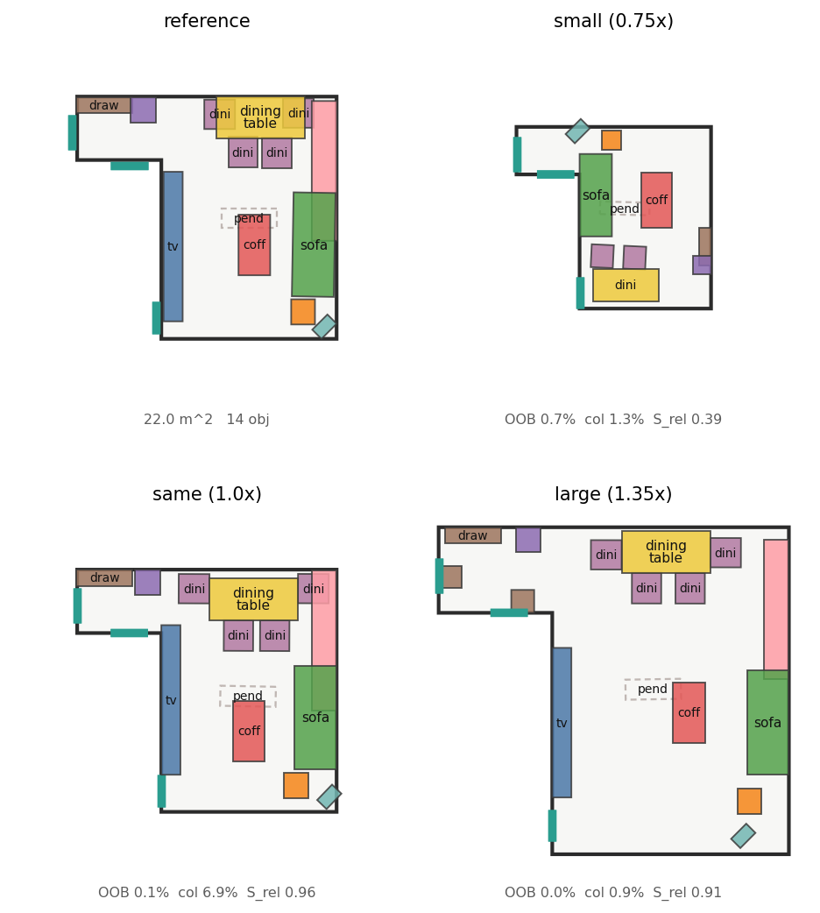
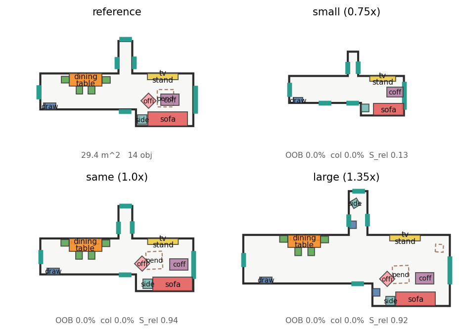

Abstract
Retargeting preserves relational topology, not absolute coordinates.
Interior design identity lives in spatial relationships and functional groupings (motifs), not in absolute coordinates. We define reference-guided 3D scene retargeting: given a user-preferred reference design \(S_\text{ref}\) and a target room boundary \(P_t\) of arbitrary shape, area, and aspect ratio, transplant the layout automatically.
The task has an intrinsic tension — preserve the reference's object composition, spatial relations, motif structure, and style, while satisfying the new room's hard geometry (wall-flush, in-bounds, collision-free). Generative sampling in a global frame breaks intent; affine warping tears motifs apart; test-time multi-step optimization is slow; and hard heuristic snapping breaks the manifold and injects secondary collisions. We contribute:
- Topology-preserving hierarchical flow — a metric reparameterization manifold \(\Phi_\mathcal{G}\) with a proof of motif topology invariance under anisotropic room deformation (Prop. 1), and a Jacobian manifold-pullback for feasibility guidance (Prop. 2).
- Differentiable proximal projection \(\Pi_\theta\) — geometric regularization as an anchored proximal operator, realized by \(K\)-step unrolling for single-step inference and gradient back-propagation, removing test-time optimization (Prop. 3′).
- Budgeted plan-summarization front-end — under extreme shrink, area-budgeted pairwise pruning and small-asset substitution, decoupling discrete topology adaptation from continuous geometric synthesis.
On 3D-FRONT and a cross-room test set, a single forward pass + single differentiable projection reaches the lowest collision rate (1.41%) and highest relational retention (\(S_\text{rel}=0.696\)) in our projection ablation, at a fraction of the latency of multi-step optimization.
1 Introduction
The scene-retargeting dilemma.
3D interior retargeting underpins personalized virtual staging, adaptive game-level generation, and metaverse space reconstruction. Our central premise — the Design Identity Hypothesis — is that a design's essence is its relative structure (intra-motif spacing, orientation alignment, wall affinity), not global coordinates. The fundamental conflict: adapt to a brand-new boundary \(P_t\) (flush, non-colliding, in-bounds) while strictly conserving \(S_\text{ref}\)'s intent and motif structure.
Dilemma
Intent is topological, but flows integrate in global coordinates.
Under non-uniform scaling the metric distance between motif members scales with the room, so a dining set is pulled apart.
Why prior fixes fail
Both standard remedies damage the layout.
Test-time energy optimization (LEGO-Net-style Adam / MCMC) costs hundreds of ms and stalls in local minima; hard heuristic snapping aligns walls but breaks topology (\(S_\text{rel}\!\downarrow\)) and rebounds collisions (\(R_\text{col}\!\uparrow\)).
Insight & method
Hierarchical topology-preserving flow + differentiable anchored projection.
Representation (Prop. 1) · pullback guidance (Prop. 2) · differentiable proximal layer \(\Pi_\theta\) (Prop. 3′).
Takeaway
Single network + single differentiable projection.
Lowest collision (1.41%) and highest topology retention (\(S_\text{rel}=0.70\)) with no test-time optimization.
1.3 Key technical innovations
- Metric-invariant reparameterization — parent-relative metric coordinates decouple child scale from room geometry (Prop. 1).
- Manifold-pullback guidance — a cross-frame Jacobian so global physical constraints propagate to hierarchical children (Prop. 2).
- End-to-end differentiable proximal projection — an unrolled operator replacing post-processing, yielding a single-network single-step pipeline (Prop. 3′).
- Causal inverse-deformation corpus — a synthesis pipeline with four physical gates guaranteeing causally valid transfer pairs.
3 Problem Formulation
A hierarchical metric manifold over an intent graph.
- Reference scene \(S_\text{ref}=\{(c_i,s_i,x_i^\text{ref},\theta_i^\text{ref})\}_{i=1}^N\): category, 3-D size, center, yaw.
- Target boundary \(P_t\in\mathbb{R}^{32\times6}\): 32 boundary samples with coordinates, height features, and inward normals \((n_u,n_v)\).
- Intent graph \(\mathcal{G}=(\mathcal{V},\mathcal{E},\alpha)\): objects as nodes; edges carry relation type and elasticity \(\alpha_{ij}\in[0,1]\); a motif hierarchy induces a parent map \(\pi:\text{child}\mapsto\text{head}\).
- Wall affinity \(a_i\in[0,1]\): how strongly object \(i\) hugged a wall in the reference.
Each state is \(x_i=(u_i,v_i,\cos\theta_i,\sin\theta_i)\in\mathbb{R}^4\), normalized to the room's minimum-rotated-rectangle frame. We use Rectified Flow with an informative prior: the Gaussian start is replaced by the reference layout affinely projected into \(P_t\) plus light noise, so the model rectifies rather than guessing globally:
$$x_0=\mathcal{T}(S_\text{ref},P_t)+\sigma\epsilon,\qquad \mathcal{L}_\text{FM}=\mathbb{E}_{\tau}\big\|v_\theta(x_\tau,\tau,\mathcal{G},P_t)-(x_1-x_0)\big\|^2 .$$4 Methodology
Two stages: discrete topology adaptation, then constrained continuous synthesis.
Stage 1 · Front-end (discrete)
Budgeted Plan-Summarization
- Area-budget & aspect-ratio pruning
- Symmetric structured pruning
- Anchor-protected small-asset swap
Stage 2 · Back-end (continuous — the core)
Topology-Preserving Constrained Hierarchical Flow
Differentiable Proximal Layer \(\Pi_\theta\) — Prop. 3′
- anchor-to-proposal term
- unrolled flush / ortho / collision ops
4.2 Stage 1 — Discrete semantic topology adaptation
Area budget \(\text{Area}_\text{budget}=\operatorname{clip}(\text{density}+\text{slack})\cdot\operatorname{Area}(P_t)\). Objects whose short side exceeds the room's inscribed-circle diameter are removed; semantic anchors (sofa, bed) are protected and instead trigger same-style small-asset substitution. When over budget, symmetric structured pruning removes secondary items in pairs (e.g. dining chairs) before importance-ordered reduction — keeping the layout semantically legal.
4.3 Stage 2 — Topology-preserving hierarchical flow
The map \(\Phi_\mathcal{G}:x\mapsto z\) keeps heads absolute and encodes children in parent-local metric coordinates (\(\lambda=\text{REL\_SCALE}=3\) m):
$$z_h=x_h,\qquad z_c=\tfrac{1}{\lambda}R(-\theta_{\pi(c)})\big(x_c-x_{\pi(c)}\big),\quad \Delta\theta_c=\theta_c-\theta_{\pi(c)}.$$Under anisotropic scaling \(A=\mathrm{diag}(s_x,s_y)\), the child metric offset is absorbed by its parent's absolute coordinate — the relative code is scale-free:
$$z_c(A\!\cdot\!P_t)=z_c(P_t)\;\Rightarrow\;\lVert x_c-x_{\pi(c)}\rVert\ \text{preserved (up to parent pose)}.$$Motifs do not disperse when the room stretches. Evidence: a 0.6 m offset yields \(z=0.2\) in both a 3 m and 4.5 m room; 1.35× motif retention 25→42%; raw \(S_\text{rel}=0.98\) at 1.0×.
The backbone is a heterogeneous transformer DiT: Type-ID node tags separate global anchors from relative children; a dense pairwise bias injects relative displacement/angle; WallCrossAttention treats the 32 boundary samples as wall tokens (children mask outer-wall attention so \(P_t\) never yanks a chair off its table); and a child loss weight \(\lambda_\text{child}=10\approx1/\sigma^2\) compensates local-vs-global scale gradients.
Feasibility energy \(\Phi=w_b E_\text{bound}+w_c E_\text{col}+w_{cl} E_\text{clear}+w_{wp} E_\text{wall}\) lives in absolute space; the flow lives on the reparameterized manifold, so guidance is pulled back:
$$z\leftarrow z+d\tau\,v_\theta-d\tau\,\mathrm{ramp}(\tau)\,\nabla_z\Phi\big(\Psi_\mathcal{G}(\hat z_1)\big),\qquad \nabla_z\Phi=J_{\Psi_\mathcal{G}}^{\top}\,\nabla_x\Phi.$$The Jacobian carries a parent-motion term for children — the explicit "move the parent, carry the children" chain rule. Implemented as decode → nudge → encode.
Geometric regularities become a smooth proximal objective anchored to the flow's proposal \(x_0\); the projection is a \(K\)-step unrolled gradient operator:
$$\Pi_\theta(x_0)=\underset{K\text{-step unroll}}{\arg\min}\;\underbrace{w_a\lVert x-x_0\rVert^2}_{\text{anchor to proposal}}+w_f E_\text{flush}+w_o E_\text{ortho}+w_c E_\text{col}.$$Every step is differentiable, so the flow-matching loss back-propagates through the projection — the DiT learns to emit layouts already near \(\Pi_\theta\)'s fixed point (OptNet / implicit-differentiation spirit, realized by explicit unrolling, dependency-free). A self-contained neural generator + convex-style projection.
Property (topology retention). The anchor term bounds the projection's displacement to the microscopic regime (mean 19 cm), so \(\Pi_\theta\) only corrects small angle/flush deviations and does not change topology: \(\lvert S_\text{rel}(\Pi(x))-S_\text{rel}(x)\rvert\le 0.005\). Without the anchor, pure energy descent drifts and tears motifs (\(S_\text{rel}\!\to\!0.566\)).
5 Causal Data & Physical Gates
Supervision by causal inverse-deformation, not forward guessing.
With no paired retargeting data, we run the problem backwards: take a real 3D-FRONT scene as ground truth \(S_\text{tgt}\), deform its boundary through a parametric family, and inverse-map the layout (moving each motif as a rigid body) to synthesize the reference \(S_\text{ref}\). Rigidity guarantees the pair reflects a physically causal design transition.

5.2 Four physical quality gates
- Area-ratio resampling — restrict \(\rho\in[0.5,2.0]\); out-of-range pairs are rejected.
- OOB gate — reject deforms whose out-of-bounds fraction exceeds threshold.
- Rigid shared-translation — push footprints poking through walls back inward (overhang 25.1% → 1.1%).
- Three-way collision audit — separate true collisions, nestable pairs (chair-under-table, bed-with-nightstand), and z-separated objects (lamp/rug), so synthetic collision never exceeds the real source baseline.
A real cross-pairing set (human designs matched across rooms by category Jaccard > 0.6 and anchor-yaw ≤ 30°, aligned by a spatial-cost Hungarian assignment) serves as an out-of-distribution generalization test — evidence the model is not merely overfitting the synthetic deformations.
6 Experiments
Single forward pass + single differentiable projection.
3D-FRONT bedrooms and living rooms, with a frozen held-out test set (12 cross-scene pairs + 4 multi-scale). Metrics: relational retention \(S_\text{rel}\) / \(S_\text{motif}\); physical feasibility \(R_\text{col}\), \(R_\text{OOB}\), wall-snap %; and inference latency.
6.2 Projection ablation (Table 1)
Same raw flow outputs, four ways to enforce geometry. Latency is the projection's added cost over the shared sampling (single L40, measured).
| Variant | \(S_\text{rel}\) ↑ | \(R_\text{col}\) ↓ | Wall-snap ↑ | Proj. latency ↓ |
|---|---|---|---|---|
| Raw DiT (no projection) | 0.700 | 1.79% | 85% | — |
| + Test-time 25-step polish | 0.652 | 1.89% | 92% | +289 ms |
| + Hard heuristic snap | 0.652 | 2.59% | 92% | +0.8 ms |
| + Differentiable \(\Pi_\theta\) (Ours) | 0.696 | 1.41% | 84% | +81 ms |
Hard snap buys crisp walls but rebounds collisions to 2.59% and drops topology; polish is 3.6× more expensive on projection and still lands below ours on \(S_\text{rel}\) and \(R_\text{col}\); ours holds the raw flow's topology (0.696 ≈ 0.700) at the lowest collision, for a near-imperceptible cost.
6.3 Qualitative results



6.4 Ablation studies
- Hierarchical relative space — global-coordinate flow vs parent-relative flow at 1.35×: motif retention 25% → 42%.
- Projection layer — none / hard snap / multi-step polish / differentiable \(\Pi_\theta\): Table 1.
- Informative prior — starting from the reference projection \(x_0\) is decisive for low global drift and convergence.
- Stage-1 pruning — symmetric structured pruning improves walkable connectivity under extreme shrink.
6.5 Planned & not-yet-run evaluations
- External-baseline head-to-head (ATISS, LEGO-Net on our metrics) — requires running their released code on this benchmark; not yet done, so no such rows appear in Table 1.
- User study — a two-question double-blind protocol (intent fidelity / realism / functionality) with designers and end users; the study instrument is live, results pend participant recruitment.
7 Discussion & Limitations
- Vertical dimension. The manifold currently models 2-D placement + yaw; extending to vertical stacking and multi-level spaces is future work.
- Unified discrete–continuous flow. Folding Stage-1 pruning into the flow via Dirichlet / categorical flow matching (a joint existence+pose process) is theoretically appealing; our prototype learns to prune but does not yet match the staged baseline's quality — an open direction.
Positioning — framing two components honestly
Discrete pruning under extreme scale disparity
avoid“a script deletes chairs with while-loops when the room is small.”
frameA two-stage architecture: (1) graph-based budgeted structural pruning — a discrete decision; (2) continuous constrained geometric synthesis — the manifold flow. Decoupled by design; the contribution is Stage 2.
Training-pair synthesis without paired data
avoid“we wrote deformation algorithms to make synthetic pairs.”
frameCausal inverse-deformation with strict quality gates — an inverse-boundary mapping preserving physical causality and motif rigidity, filtered by four physical gates, with a real cross-pairing OOD test showing the model is not overfit to the synthesis.
Cite
@article{reroom,
title = {ReRoom: Reference-Guided 3D Scene Retargeting via Topology-Preserving
Hierarchical Flow and Differentiable Geometric Projection},
author = {ReRoom Project},
journal = {Preprint, in preparation},
year = {2026},
url = {https://gino6178.github.io/project4/paper.html}
}
Draft in preparation — not peer-reviewed and not associated with any accepted venue. Numbers are from this repository's measurements; unrun evaluations are marked in §6.5.